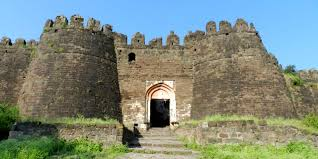

दौलताबाद किल्ला
Location : Click Here For Google Map
- माहिती
- दौलताबाद किल्ला महाराष्ट्र राज्याच्या औरंगाबाद जिल्ह्यात स्थित एक ऐतिहासिक किल्ला आहे. हा किल्ला त्याच्या अद्वितीय स्थापत्यशास्त्र आणि ऐतिहासिक महत्त्वासाठी प्रसिद्ध आहे. दौलताबाद किल्ला प्राचीन काळातील एक अत्यंत सामरिकदृष्ट्या महत्त्वाचा किल्ला मानला जातो.
किल्ल्याची बांधणी १२ व्या शतकात यादव वंशाच्या शासकांनी केली होती, परंतु त्याला प्रत्यक्षात प्रसिद्धी मिळाली ती सुलतान मोहम्मद बिन तुघलक याच्या काळात. मोहम्मद बिन तुघलकाने १३ व्या शतकात दौलताबादला आपले राजधानी बनवले होते. किल्ल्याचा प्रमुख आकर्षण म्हणजे त्याच्या कडेकडेच्या भिंती, उंच शिखर आणि किल्ल्याचा प्रवेशद्वार, ज्यात एक विशिष्ट रणनीतिक संरचना आहे.
किल्ल्याच्या परिसरात गडाची रचना पाहता, तो अत्यंत सुरक्षित ठिकाण होता. किल्ल्याचा प्रवेश मार्ग अवघड आणि गुळगुळीत होता, ज्यामुळे शत्रूच्या हल्ल्यापासून किल्ल्याचे रक्षण करणे सोपे होते. किल्ल्याच्या आत असलेल्या संरचनांमध्ये प्राचीन गव्हाच्या गोदामे, गोपनीय गुप्तमार्ग, टाकी आणि भिंती आहेत. किल्ल्याच्या शिखरावरून संपूर्ण परिसराचे दृश्य एक आश्चर्यकारक अनुभव प्रदान करते.
आजकाल, दौलताबाद किल्ला एक प्रमुख पर्यटन स्थळ आहे आणि त्याच्या ऐतिहासिक कलेला पाहण्यासाठी पर्यटक मोठ्या संख्येने येथे येतात. किल्ल्याच्या अवशेषांमध्ये प्राचीन भारताच्या स्थापत्यकलेचे उत्कृष्ट उदाहरण दिसते, जे या किल्ल्याच्या ऐतिहासिक महत्त्वाला आणखी बल देतात.
Explore the historical beauty
